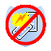
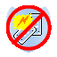

|
|
Lapok lerakhatósága
Kezdetben húznak egy kezdõlapot és utána a kártyailleszkedési szabályok szerint kell
mindig a felül lévõ lapra tenni. Alapesetben színben vagy jelzésben illeszkedõ lapot lehet lerakni, de számos
ezt kiegészítõ lehetõség, illetve adott esetben felülbíráló szabály van. Ezek alkalmazhatósága függ
mind az akutális szín- és jelzés, mind a lerakni kívánt lap tulajdonságaitól:
[A tulajdonságok felsorolása következik. Azt, hogy mely színek/jelzések az alábbiak közül melyekkel
rendelkeznek, azt ld. az SzínSúgóban és a JelzésSúgóban.]
|
|
|

 Bevezetõ |
Bevezetõ |
 Szabályok |
Szabályok |
 Súgó |
Súgó |
 Paklik
Paklik


 (Sorozhatóság)
(Sorozhatóság) (Beszúrhatóság)
(Beszúrhatóság)
 (Vétózhatóság)
(Vétózhatóság) (Kimaradás / kötelezõ húzás halmozásásának, áthárításának lehetõsége)
(Kimaradás / kötelezõ húzás halmozásásának, áthárításának lehetõsége) (Kimaradás / kötelezõ húzás kezdeményezése ['utasítás'])
(Kimaradás / kötelezõ húzás kezdeményezése ['utasítás']) (Extra sorozás lehetõsége)
(Extra sorozás lehetõsége) (Színkérés)
(Színkérés) (Jelzéskérés)
(Jelzéskérés)